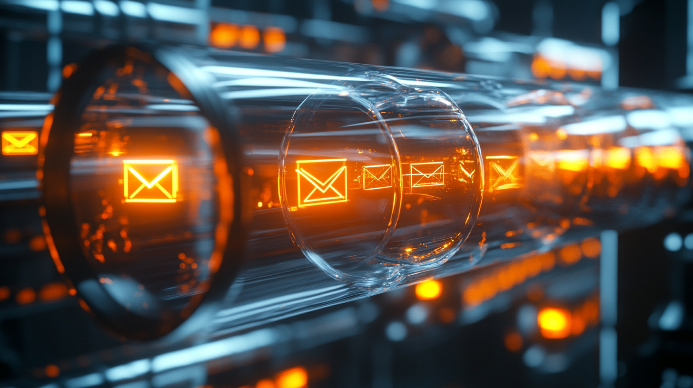
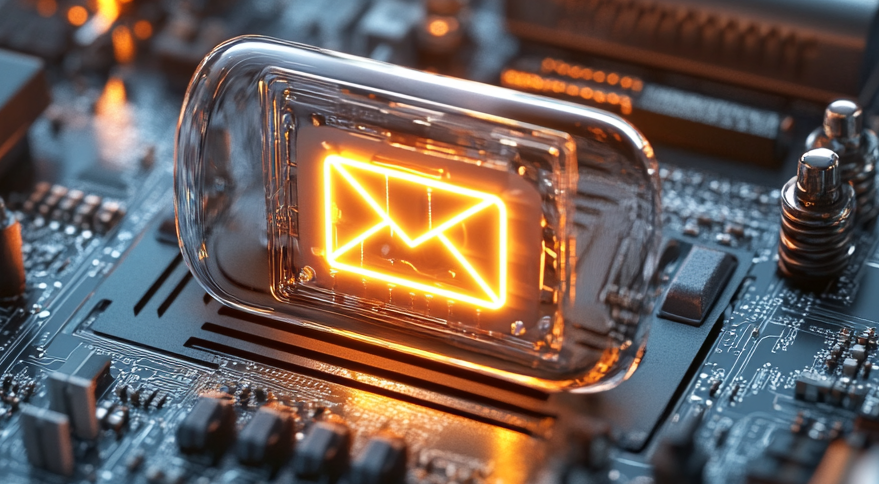
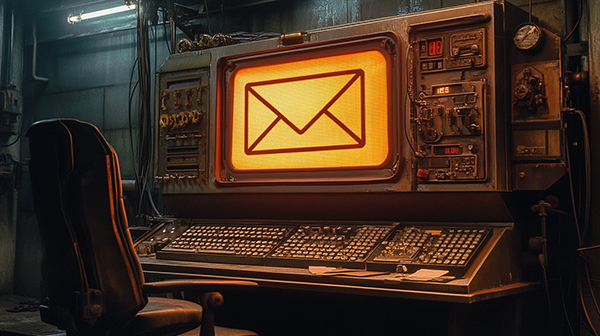

Protecting Your Inbox: Understanding the Risks and Rewards of Email Usage

Email has become an indispensable tool for both personal and professional communication. However,
careless or uninformed use of email can gradually lead to an overwhelming buildup of spam,
malicious links, and potential security threats. Spam emails often serve as gateways for
phishing attacks, malware distribution, and other forms of cybercrime.
According to the Federal Trade Commission (FTC),
scammers frequently use deceptive emails to trick users into revealing sensitive information
such as passwords, financial data, or social security numbers.
Moreover, the sheer volume of unwanted messages can clutter your inbox, making it easy to miss
legitimate and important communications. Spamhaus
reports that spam constitutes a significant percentage of global email traffic, underscoring
how easily an inbox can become a breeding ground for fraudulent schemes if not carefully managed.
In many cases, simply clicking an unknown link or opening a suspicious attachment can compromise
your entire device or network.
One effective way to reduce these risks is by using temporary email services. A temporary email
address lets you receive messages for a short duration—often 10 minutes—before the address and
its contents are automatically deleted. This approach provides a buffer between your personal
inbox and potential spam or malware attempts. By leveraging a disposable email, you can sign up
for new websites, download e-books, or verify online accounts without exposing your primary email
address. The Cybersecurity and Infrastructure
Security Agency (CISA) emphasizes the importance of maintaining good email hygiene, and
disposable addresses can be a vital part of that strategy.
From a technical standpoint, temporary email services work by creating a unique, random address
on the fly. When an incoming message arrives, it is stored on the server for only 10 minutes.
During this period, you can access and read your emails or even reset the timer if you need
more time. Once the countdown hits zero, both the address and any messages within it are
permanently removed from the server. This ensures that no long-term data is stored and
dramatically reduces the likelihood of spammers obtaining your real information.
While disposable email addresses are not a universal solution to all security concerns,
they can be an invaluable tool in situations where you need a quick, throwaway inbox—especially
if you’re unsure about the trustworthiness of a website. By isolating your personal address
from potential spam traps, you can keep your primary inbox cleaner, safer, and more manageable.
Ultimately, responsible email practices are key to protecting your digital life. Combining
strong passwords, multi-factor authentication, and disposable email addresses can help keep
your inbox free of clutter and reduce your exposure to threats. By staying informed and
employing the right tools, you’ll minimize spam, enhance your privacy, and enjoy a more
secure online experience.

Technical Details of How Email Works
Understanding the Technical Foundations of Email
Email is one of the oldest and most ubiquitous forms of digital communication, serving as a backbone for personal, corporate, and marketing correspondence worldwide. Despite its simplicity from a user’s perspective—typing a message, clicking “send,” and waiting for the recipient to respond—email relies on a complex ecosystem of protocols, servers, and security standards. This article will delve into the technical details of how email works, examining its history, core protocols, message formats, and the methods used to ensure reliable and secure delivery.
1. Historical Context
Email traces its origins back to the early days of the ARPANET in the late 1960s and early 1970s. As researchers sought to exchange messages across connected computers, rudimentary mail applications were created. By 1971, Ray Tomlinson had introduced the “@” symbol to route messages to specific mailboxes on networked machines. Over time, as the ARPANET evolved into the modern Internet, email became standardized through various protocols, such as SMTP, POP3, and IMAP, which remain in widespread use today.
Though many modern communication platforms exist—instant messaging, social media, and specialized collaboration tools—email endures as a cornerstone of digital life due to its open standards and universal compatibility. Understanding the underpinnings of email is essential for comprehending why it remains both robust and, in certain respects, vulnerable to spam and security threats.
2. Core Protocols and the Email Architecture
From a technical standpoint, email relies on client-server architecture and multiple protocols to handle message submission, transfer, and retrieval. The key players in email delivery include:
Mail User Agents (MUAs): These are email clients, such as Microsoft Outlook, Mozilla Thunderbird, Apple Mail, or web-based clients like Gmail’s web interface. MUAs allow end users to write, send, receive, and organize emails.
Mail Transfer Agents (MTAs): These are mail servers responsible for sending and routing emails across the Internet. Examples include Postfix, Exim, and Microsoft Exchange. When you click “send” in your email client, the MUA hands off the message to an MTA, which looks up DNS records and routes the message to the recipient’s mail server.
Mail Delivery Agents (MDAs): Sometimes the same software as the MTA, sometimes separate, the MDA accepts inbound mail from an MTA and places it into the appropriate mailbox on the server for the recipient. In smaller setups, MTA and MDA tasks can be performed by the same software.
Two sets of protocols govern how email is transferred and retrieved:
Simple Mail Transfer Protocol (SMTP): Used for sending and routing emails from one server to another.
Post Office Protocol (POP3) and Internet Message Access Protocol (IMAP): Used for retrieving email from a server to a client.
In essence, when a user sends an email, the message is passed from the MUA to an outgoing mail server (an MTA) via SMTP. That MTA looks up the recipient’s mail server using DNS, and if everything is valid, transfers the email to the destination server’s MTA, also using SMTP. Finally, the recipient’s mail server delivers the message to the recipient’s mailbox, where it can be accessed via POP3, IMAP, or a proprietary protocol.
3. Simple Mail Transfer Protocol (SMTP)
SMTP is the backbone of email transmission. It typically operates over port 25 for server-to-server communications, though some modern systems use port 587 or 465 for client submissions (the latter often wrapped with TLS encryption). When you send an email, your MUA will:
Connect to the outgoing mail server (MTA) via SMTP.
Issue a series of commands (HELO/EHLO, MAIL FROM, RCPT TO, DATA, etc.) to describe who is sending the message and who the intended recipient(s) are.
Transmit the actual message data, including headers (From, To, Subject) and the body.
Conclude the session with a final command (e.g., QUIT).
The MTA then repeats a similar process if it needs to forward the email to another server closer to the recipient. During this process, DNS queries are performed to find the MX (Mail eXchanger) records for the recipient’s domain. These records indicate which mail server(s) accept mail for that domain. Once the final destination MTA is reached, the message is handed off to the local MDA or a mailbox system, and it becomes available for retrieval by the recipient.
4. POP3 vs. IMAP for Email Retrieval
While SMTP handles outbound messages, POP3 and IMAP handle inbound message retrieval. Both protocols connect a user’s MUA (client) to the mailbox on a mail server:
POP3 (Post Office Protocol version 3):
Typically operates on port 110 (unencrypted) or port 995 (POP3S with SSL/TLS).
Designed for simple, one-way message retrieval. By default, POP3 downloads messages from the server and can delete them from the server afterward (though modern clients can leave copies on the server).
Useful in scenarios with limited Internet connectivity or single-device access. However, it lacks robust synchronization across multiple devices because changes (like marking a message as read) don’t automatically propagate back to the server.
IMAP (Internet Message Access Protocol):
Typically operates on port 143 (unencrypted) or port 993 (IMAPS with SSL/TLS).
Maintains messages on the server and allows multiple folders and states (read, unread, flagged) to be synchronized across multiple devices.
Supports more advanced features like server-side searching, folder subscriptions, and concurrent access from multiple clients.
For most modern usage, IMAP is preferred due to its superior synchronization features. However, POP3 still remains in use, particularly for legacy systems or minimalistic setups.
5. Domain Name System (DNS) and MX Records
To route an email to the correct server, the sending MTA must know where the recipient’s mailbox is hosted. This is where DNS comes into play. Every domain (e.g., example.com) can have multiple MX records, each specifying a mail server hostname and priority. For instance:
example.com. 3600 IN MX 10 mail1.example.com.
example.com. 3600 IN MX 20 mail2.example.com.
When an MTA wants to deliver mail to user@example.com, it queries the DNS for MX records of example.com. It sees mail1.example.com is priority 10, which is the preferred server. If that server is unreachable, it tries the next priority, mail2.example.com with priority 20. Without MX records, mail would default to an A record lookup, but this is generally discouraged and not as reliable. The DNS system is thus integral to email’s distributed design, allowing any domain to host its own mail server, outsource it to a third party, or have multiple backups.
6. Message Format and MIME
The core format of an email message is governed by RFC 5322 (formerly RFC 2822, and before that RFC 822). This standard specifies how headers (like From:, To:, Date:, Subject:) and the message body are structured. However, early email was limited to plain ASCII text, which posed challenges for non-English languages, images, and attachments.
To solve these limitations, MIME (Multipurpose Internet Mail Extensions) was introduced. MIME:
Allows different content types (text/plain, text/html, image/jpeg, application/pdf, etc.).
Provides encoding schemes like Base64 or Quoted-Printable for binary data.
Permits multipart messages, so an email can contain both a plain text and HTML version, attachments, or embedded images.
When you attach a file, your MUA encodes it in a suitable format (often Base64) and includes it as part of a multipart MIME message. When the recipient’s MUA retrieves it, it decodes and displays or stores the attachment accordingly.
7. Security and Encryption
By default, SMTP was historically a plain-text protocol, meaning messages could be intercepted and read while in transit. Over time, security enhancements have been added:
TLS (Transport Layer Security): Often referred to as “STARTTLS” for SMTP, this method upgrades a plain-text connection to an encrypted one on ports 25, 587, or 465. Similarly, POP3 and IMAP have their own TLS versions (ports 995 and 993, respectively). Encryption helps protect messages from eavesdroppers but does not guarantee end-to-end security if the receiving server or intermediate relay is compromised.
End-to-End Encryption: Solutions like PGP (Pretty Good Privacy) or S/MIME can encrypt the content of an email so only the sender and the intended recipient can read it, even if intercepted. However, these methods require key management and are not as universally adopted as TLS.
Authentication: Modern MTAs typically require SMTP AUTH for outgoing mail from their users, preventing unauthorized parties from relaying spam. This is separate from the encryption of data in transit but is a crucial step to ensure only legitimate users can send mail from a server.
8. Spam, Filtering, and Reputation
Because email is based on open protocols, spam and phishing have become major problems. Various methods help mitigate unwanted email:
Spam Filters: Tools like SpamAssassin, machine learning classifiers, or commercial services evaluate incoming messages for spam-like characteristics (keywords, suspicious links, known spammer IPs, etc.). They may quarantine or flag suspicious emails.
Reputation and Blacklists: IP addresses or domains that send high volumes of spam may be listed on real-time blackhole lists (RBLs). Receiving servers often consult these lists to block or rate-limit messages from known spam sources.
SPF (Sender Policy Framework): A DNS record that indicates which IP addresses or servers are allowed to send mail for a domain. Receiving MTAs can check the SPF record to see if the sender is authorized, reducing the chance of spoofing.
DKIM (DomainKeys Identified Mail): A cryptographic signature added to outbound messages. The recipient server checks the signature against a public key published in DNS. If it matches, the email is verified as genuinely sent from the domain’s servers.
DMARC (Domain-based Message Authentication, Reporting, and Conformance): Builds on SPF and DKIM. Domain owners specify how receiving servers should handle messages that fail SPF or DKIM checks (e.g., reject, quarantine, or none). DMARC also provides reporting so domain owners can see if unauthorized parties are attempting to spoof their domain.
Together, these tools form a layered approach to reduce spam, phishing, and domain spoofing. While not foolproof, they significantly improve the overall reliability and trustworthiness of email communications.
9. Message Queues and Retries
Email delivery isn’t always immediate. MTAs maintain queues where messages await processing. If a destination server is temporarily unavailable, the MTA retries for a specified period (commonly up to several days). It uses exponential backoff, waiting progressively longer between each attempt. If the message cannot be delivered after the retry window, it’s returned to the sender with a “bounce” or “undeliverable” notification.
This queued approach ensures email is resilient against transient network outages or server downtime. Even if a server is offline for a few hours, email can still arrive once it’s back up, thanks to the MTA’s persistent retries.
10. Large-Scale Email Providers
Companies like Google (Gmail), Microsoft (Outlook/Office 365), and Yahoo operate massive email infrastructures. They run numerous distributed MTAs, handle billions of messages daily, and invest heavily in spam detection and user interface features. Their systems incorporate custom load-balancing, advanced spam/virus filters, and enormous storage arrays for mailboxes. They also often rely on proprietary algorithms for features like priority inboxing, automatic labeling, or “smart” categorization of emails (e.g., promotions, social, primary).
Despite their scale, these providers still adhere to the core email protocols—SMTP, IMAP, POP3—ensuring interoperability with other mail systems worldwide. However, they may add additional vendor-specific layers or APIs for advanced features and user management.
11. Email Clients and Protocol Extensions
Most email clients, whether desktop or mobile, implement standard protocols but can add convenience features:
Push Notifications: While IMAP idle allows near-instant notification, some providers (like Gmail) offer proprietary push protocols for mobile clients.
OAuth Authentication: Instead of storing passwords in the client, OAuth tokens can be used, especially with large providers, improving security.
Extensions: SMTP, IMAP, and POP3 have optional extensions (e.g., ESMTP, IDLE, UIDPLUS) that enhance functionality. Clients negotiate these with servers during the handshake.
The result is that, while the fundamentals remain stable, incremental improvements keep email evolving and able to meet modern needs.
12. Logging, Monitoring, and Troubleshooting
Administrators rely on server logs and monitoring tools to diagnose issues. Common tasks include:
Examining SMTP logs: Observing whether messages are being accepted, deferred, or bounced, and why.
Reviewing mail queue: Checking how many messages are stuck in the queue and which destinations are causing delays.
Analyzing bounce messages: Identifying patterns, such as DNS misconfigurations or blacklisting, which can hamper delivery.
Monitoring performance: Keeping an eye on CPU, RAM, disk usage, and network throughput on mail servers, especially under heavy loads.
Tools like mailq, postqueue, or server logs (/var/log/maillog on many Linux systems) are indispensable for diagnosing email flow problems. Combined with DNS checks, administrators can quickly spot issues like expired SSL certificates, DNS record mismatches, or mail server misconfigurations.
13. Future Directions
Despite email’s longevity, it continues to evolve. Some possible future developments include:
Widespread Adoption of Encryption: While TLS is common, fully end-to-end encrypted email remains niche. If user-friendly encryption becomes standard, it could drastically improve privacy.
Stronger Anti-Spam Measures: Enhanced machine learning, widespread adoption of DMARC, and improved reputation systems may further reduce spam.
Interoperability with Other Platforms: Email might integrate with messaging services or collaboration platforms. Some tools already unify email and chat under a single interface.
Protocol Extensions: Proposed standards like SMTPUTF8 allow for internationalized email addresses. More robust features might come to IMAP, or new protocols could supplement or replace existing ones.
Regardless of changes, the fundamental design of email—an open, distributed system built on standardized protocols—remains highly resilient.
14. Conclusion
Email may appear simple at first glance—type a message, click send—but beneath the surface is a rich tapestry of protocols, server roles, DNS lookups, MIME formatting, security mechanisms, and spam filtering techniques. From the moment a user composes a message in a Mail User Agent to the final step of retrieving it from a server, each stage is governed by well-defined rules and decades of iterative improvements.
This longevity and interoperability make email a unique cornerstone of the Internet. It connects billions of users, fosters global communication, and supports everything from personal conversations to automated notifications and large-scale marketing campaigns. While newer communication methods continue to emerge, email’s open nature and extensive ecosystem of tools, servers, and protocols ensure that it remains both relevant and vital.
By understanding how email works at a technical level, administrators can better troubleshoot delivery issues, secure their servers against spam and phishing, and adopt best practices like TLS encryption, SPF, DKIM, and DMARC. End users, meanwhile, can appreciate the complexity behind every message they send or receive—and why email, despite its occasional flaws, endures as one of the most essential services on the Internet.
The Dangers of Email Phishing, Clues to Spot It, and Its Ties to Social Engineering
Email phishing is one of the most pervasive cyber threats in the modern digital landscape. Every day,
millions of phishing emails are sent out by cybercriminals who aim to deceive recipients into revealing
personal data, login credentials, or even sensitive financial information. While many people believe they
can easily recognize a suspicious email, the truth is that phishing tactics continue to evolve, becoming
more sophisticated and harder to detect. This article will explore the dangers of email phishing, highlight
the key indicators to look out for, and explain how phishing is fundamentally connected to social
engineering techniques.
The Rise of Email Phishing
Email phishing emerged in the mid-1990s as the internet began to gain widespread adoption. Early attempts
were crude and often riddled with spelling errors, strange email addresses, and improbable claims of
lottery winnings. Over time, however, attackers learned to refine their methods. They now use advanced
spoofing techniques, polished language, and psychologically compelling messages. As technology advances,
the barriers to entry for cybercriminals continue to drop: phishing kits, which bundle malicious templates
and scripts, can be purchased on underground forums, making it easier than ever for aspiring cybercriminals
to get started.
The ubiquity of email as a communication tool makes it an attractive target for attackers. Nearly every
adult in developed nations uses email in some form—whether for work, personal communication, or online
registrations. With such a large attack surface, phishers only need a small fraction of recipients to fall
for their ruse to generate a profit or steal valuable information. Some phishing emails may seek usernames
and passwords, others might include malicious attachments that install malware, and still others might
direct users to spoofed websites designed to harvest credit card numbers. In all cases, the end goal is to
exploit the user’s trust and gain unauthorized access to data or financial resources.
Why Phishing Is So Dangerous
1. Financial Loss: Many phishing scams aim to obtain bank account details or credit card
numbers. Once the attackers have this information, they can make unauthorized transactions, siphon funds,
or sell the data on dark web marketplaces. Victims can lose thousands of dollars before they realize
they’ve been duped.
2. Identity Theft: Beyond immediate financial damage, phishing can lead to identity theft.
Attackers who acquire personally identifiable information (PII)—like full names, addresses, phone numbers,
and Social Security numbers—can open new credit lines or commit other fraudulent acts in the victim’s name.
3. Data Breaches: In a corporate environment, a successful phishing attack can give hackers
access to a company’s internal network. They may exfiltrate proprietary data, client records, or employee
information, leading to reputational damage and potential legal consequences.
4. Malware Infections: Phishing emails often contain links or attachments that, when
clicked or opened, install malware such as keyloggers or ransomware. Ransomware can encrypt an entire
system’s files, demanding payment for the decryption key. Keyloggers silently record keystrokes, capturing
login credentials or private messages.
5. Reputational Damage: If attackers gain control of an individual’s or a company’s email
account, they can impersonate the user or organization, sending malicious messages to contacts. This
tarnishes trust and can have long-term repercussions for personal or brand reputations.
Clues to Recognize Phishing Emails
1. Urgent or Threatening Language: Phishing messages often create a sense of panic or
urgency. Phrases like “Your account will be suspended within 24 hours” or “You’ve been selected for an
urgent security update” are common tactics to rush users into taking immediate action without thinking
carefully.
2. Suspicious Sender Addresses: While phishers can spoof legitimate email addresses to some
extent, many still originate from odd or unrelated domains. Always double-check the sender’s address. If it
claims to be from a well-known company but the domain doesn’t match (e.g., @account-security.com
instead of @paypal.com), that’s a red flag.
3. Generic Greetings and Grammar Mistakes: “Dear Valued Customer” or “Hello User” might
signal that the email is mass-produced. Although criminals have improved their grammar, consistent mistakes
or awkward phrasing remain a key indicator. Legitimate businesses often use your actual name or specific
references to your account.
4. Unsolicited Attachments: Phishing emails sometimes arrive with attachments purporting to
be invoices, receipts, or scanned documents. Unless you are expecting a file from someone, never open
attachments from unknown sources. Always verify with the sender if you’re uncertain.
5. Links Leading to Fake Websites: Phishers frequently embed links that appear legitimate
but redirect you to a spoofed site. Hover your cursor over the link (without clicking) to check the real
URL in your email client’s status bar. If it doesn’t match the text shown or looks suspiciously long, avoid
clicking.
6. Requests for Personal Information: Reputable organizations rarely, if ever, ask for
sensitive details (passwords, credit card info, Social Security numbers) via email. If you receive such a
request, call the organization’s official support line to verify.
The Social Engineering Connection
Phishing is, at its core, a form of social engineering. Social engineering relies on
manipulating human psychology rather than exploiting technical vulnerabilities. Attackers use fear,
curiosity, greed, or a sense of urgency to coerce people into making mistakes. Whether it’s a subject line
proclaiming “You Won a Prize!” or a message suggesting that your bank account will be frozen, the essence
of social engineering is to trigger a knee-jerk reaction—one that bypasses your normal caution and critical
thinking.
Emotional Exploitation: Humans are emotional creatures, and criminals know how to tap into
our desires and fears. By promising financial gain or threatening dire consequences, they ensure recipients
act quickly, sometimes ignoring basic security practices.
Authority and Trust: Many phishing attacks impersonate well-known brands (Amazon,
Microsoft, PayPal) or official institutions (banks, government agencies). These organizations carry
inherent authority, and victims might not suspect an email from them to be fake. This trust factor is a
cornerstone of social engineering.
Contextual Personalization: Advanced phishing emails, known as spear phishing, use
personal data gleaned from social media or data breaches. By referencing a user’s workplace, friends, or
recent transactions, they create a heightened sense of legitimacy. This personalized approach leverages
social engineering principles—people are more likely to respond if the request feels relevant and tailored.
How Social Engineering Amplifies Phishing Risks
1. Masquerading as Colleagues: In corporate settings, a spear phisher might impersonate a
CEO or department head, emailing an employee about an “urgent invoice.” The recipient, believing they’re
assisting a superior, may rush to fulfill the request, sending funds or revealing sensitive data.
2. Leveraging Real Events: Attackers often tie their emails to current news stories,
holidays, or crises. For example, during tax season, fraudulent messages claiming to be from the IRS spike.
During a global health crisis, scammers pose as health officials offering critical updates.
3. Layered Attacks: Social engineering might start outside email. Attackers could first
gather personal details via phone calls (vishing) or social media interactions. Armed with that data, they
craft a highly believable email. This multi-step approach is more likely to succeed than generic spam.
Defending Against Phishing and Social Engineering
1. Education and Training: Awareness is the first line of defense. Individuals and
employees should regularly receive training on how to identify phishing emails and suspicious links.
2. Two-Factor Authentication (2FA): Even if credentials are compromised, 2FA can block
unauthorized logins. Implement 2FA on email, banking, and other critical accounts.
3. Email Filtering and Security Software: Modern email providers and security suites use
machine learning to filter out phishing attempts. Keep these tools updated, and check your spam folder
periodically.
4. Verification Procedures: Always confirm suspicious requests through an alternative
channel—like a phone call to the official number or a separate email to a known address. In a business
context, establish a clear policy for wire transfers and account changes.
5. Secure Password Practices: Use unique, strong passwords for every account. A password
manager can help maintain good password hygiene without memorizing dozens of complex strings.
6. Check URLs Before Clicking: Hover over links to verify the real destination. If in
doubt, manually type the known domain into your browser rather than clicking an email link.
7. Report Suspicious Emails: Many organizations have a reporting mechanism for suspicious
emails. By alerting IT or the relevant security team, you help them warn others and improve filters.
Conclusion
Email phishing remains one of the most successful forms of cyberattack because it targets the most
vulnerable link in the security chain: human behavior. By exploiting our trust, emotions, and sense of
urgency, phishers trick even savvy users into handing over valuable information or clicking harmful links.
Recognizing the telltale signs of phishing—unusual sender addresses, urgent language, suspicious
attachments, or links that don’t match legitimate domains—is critical for every email user.
Yet phishing isn’t merely a technical issue; it’s a social engineering problem at its core. Attackers prey
on human vulnerabilities by crafting messages that feel authentic or alarming. Understanding how these
psychological triggers work allows individuals and organizations to bolster their defenses. Education,
strong security practices, and a healthy dose of skepticism can significantly reduce the risk. By staying
vigilant, employing tools like 2FA, and verifying suspicious requests through reliable channels, users can
protect themselves and their networks from the ever-evolving threat of phishing.

When to Use Temporary Emails: Best Practices and Use Cases
In an era where online privacy is constantly under threat, protecting your personal information has never been more critical. One simple yet effective tool to achieve this is the temporary email. These disposable email addresses allow you to interact online without exposing your primary email to spam, phishing, or data breaches. Whether you’re signing up for a new service or shielding your identity from untrusted sources, temporary emails offer a practical solution. This article dives into when to use temporary emails, how to use them effectively, and why they’re a game-changer for your online security.
What Are Temporary Emails?
Temporary emails are short-term, disposable email addresses designed for one-time or limited use. Unlike your permanent email, which is tied to your identity and daily communications, a temporary email expires after a set period—sometimes minutes, sometimes hours—making it ideal for situations where privacy is a priority. Services like EmailVanish.com make it easy to generate these addresses instantly, offering a shield between your personal inbox and the vast, often unpredictable digital world.
When to Use Temporary Emails: Key Use Cases
Temporary emails shine in scenarios where you need an email address but don’t want long-term exposure. Here are some of the most common and useful situations:
- Signing Up for Online Services: From free trials to newsletters and forums, many websites require an email to register. Using a temporary email keeps your primary inbox free from promotional spam or unwanted follow-ups, especially if you’re unsure about the site’s trustworthiness.
- Receiving Verification Codes: Need to verify an account or reset a password? A temporary email can receive the necessary code without linking your personal email to the service. Once you’ve got what you need, the email vanishes, leaving no trace.
- Interacting with Untrusted Sources: Whether you’re replying to a classified ad, joining a public chat, or downloading a file from an unfamiliar site, a temporary email protects your identity. If the interaction turns sour—say, with spam or phishing attempts—you can simply let the email expire.
- Testing and Development: Developers, marketers, or anyone creating multiple accounts for testing purposes can use temporary emails to streamline the process. This keeps their work inbox organized and eliminates the hassle of managing countless permanent addresses.
Best Practices for Using Temporary Emails
To get the most out of temporary emails while keeping your online experience smooth and secure, follow these best practices:
- Choose the Right Expiration Time: Select an expiration period that fits your needs—10 minutes might work for a quick verification, while an hour could be better for a longer sign-up process. The goal is to keep the email active just long enough to serve its purpose.
- Keep an Eye on the Inbox: Check the temporary email regularly for expected messages. Many services send codes or confirmations instantly, but delays can happen. Missing a message before the email expires could mean starting over.
- Avoid Sensitive Communications: Never use temporary emails for anything critical, like banking, healthcare correspondence, or legal matters. These addresses lack permanence and security features like encryption, making them unsuitable for confidential exchanges.
- Generate a New Email Each Time: For maximum privacy, use a fresh temporary email for every new service or interaction. Reusing the same address across platforms could allow trackers to connect the dots, undermining your anonymity.
Why Use Temporary Emails? The Benefits
Incorporating temporary emails into your online habits brings a host of advantages. Here’s why they’re worth your attention:
- Boosted Privacy: By keeping your primary email out of sight, temporary emails prevent it from being scraped by spammers or sold to marketers. Your personal data stays yours.
- Less Spam, More Peace: Say goodbye to inbox clutter. Temporary emails catch the flood of promotional emails that often follow a sign-up, then disappear—leaving your main inbox pristine.
- Safeguard Against Breaches: If a website you’ve used with a temporary email gets hacked, there’s little to worry about. The compromised address isn’t tied to your real identity or other accounts, minimizing the fallout.
- Effortless Convenience: No sign-up, no personal details—just generate and go. Temporary emails are fast and flexible, perfect for quick tasks without the commitment of a permanent address.
Common Mistakes to Avoid
While temporary emails are user-friendly, a few missteps can reduce their effectiveness. Steer clear of these pitfalls:
- Reusing the Same Email: Using one temporary email for multiple services defeats the purpose. It creates a trail that could link your activities, exposing you to tracking or spam. Always opt for a new address.
- Forgetting to Check Messages: If you don’t monitor the inbox, you might miss a crucial verification code or response before the email expires. Set a reminder or keep the tab open until you’re done.
- Relying on Them for Long-Term Use: Temporary emails aren’t built to last. Using them for ongoing subscriptions or accounts you’ll need to access later can leave you locked out once the address disappears.
- Assuming Total Security: While they enhance privacy, temporary emails aren’t bulletproof. They don’t encrypt messages or protect against all threats, so use them wisely within their limits.
Conclusion: A Smarter Way to Stay Safe Online
Temporary emails are more than just a convenience—they’re a powerful ally in the quest for online privacy and security. From dodging spam to shielding your identity, they offer a straightforward way to navigate the digital landscape with confidence. By using them in the right situations, following best practices, and avoiding common mistakes, you can keep your personal email safe and your inbox clutter-free. Tools like EmailVanish.com make it easier than ever to harness this technology, empowering you to take control of your online presence. So next time you’re hesitant to share your email, consider going temporary—it’s a small step with a big impact.